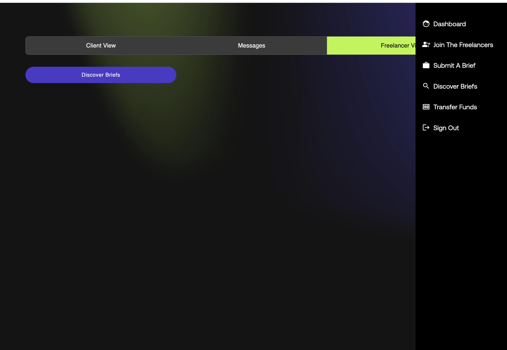
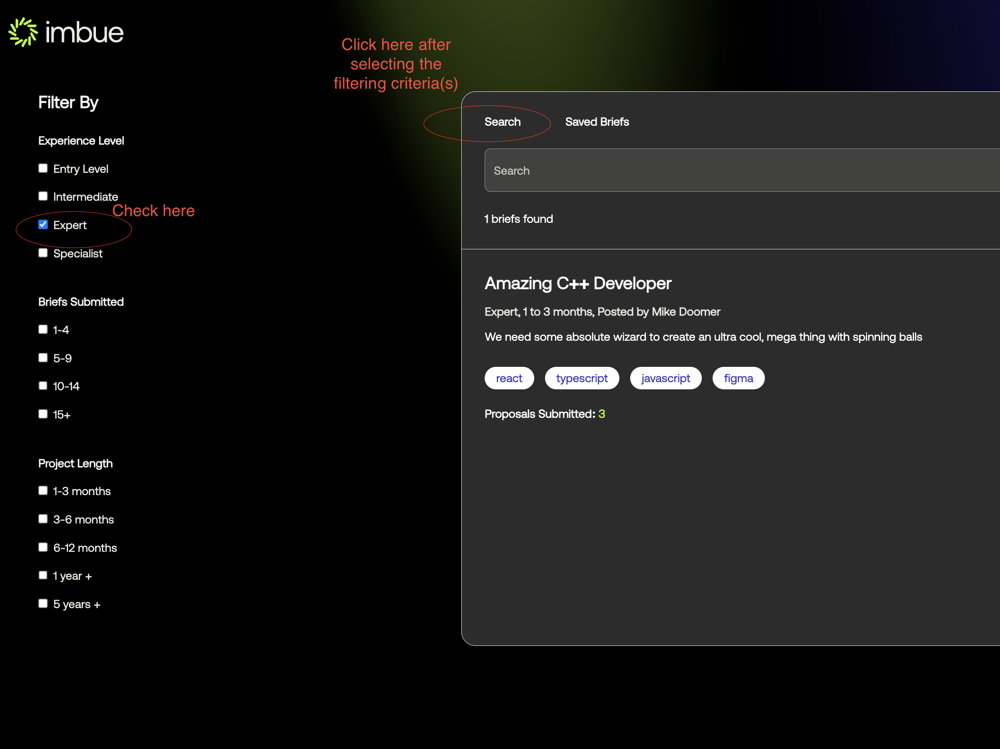
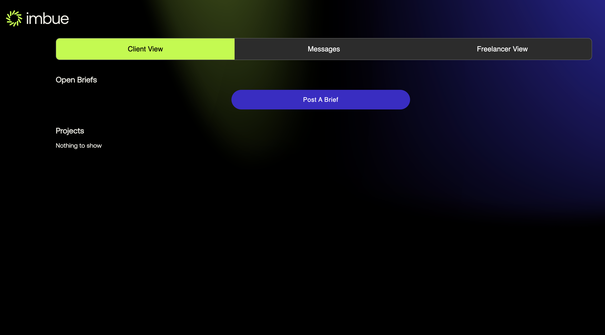
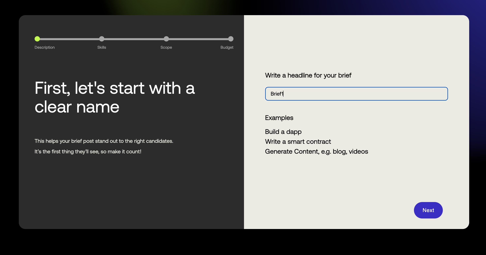
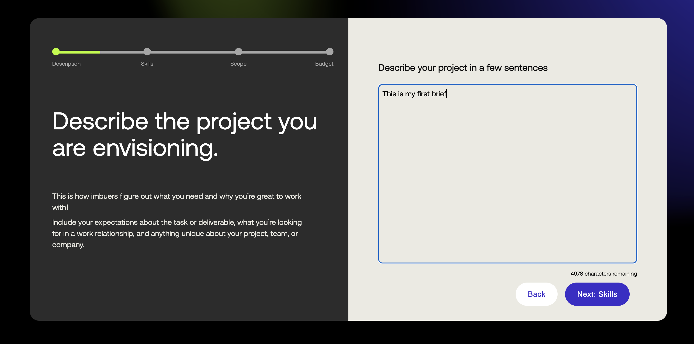
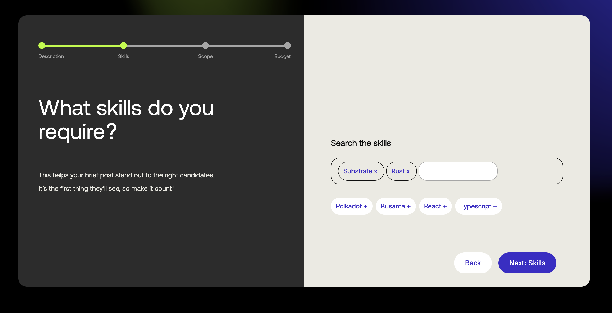
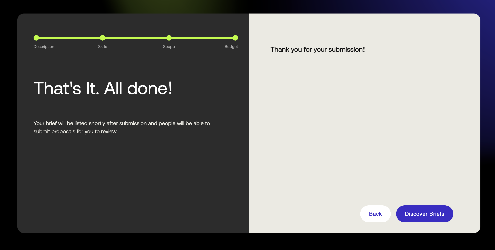
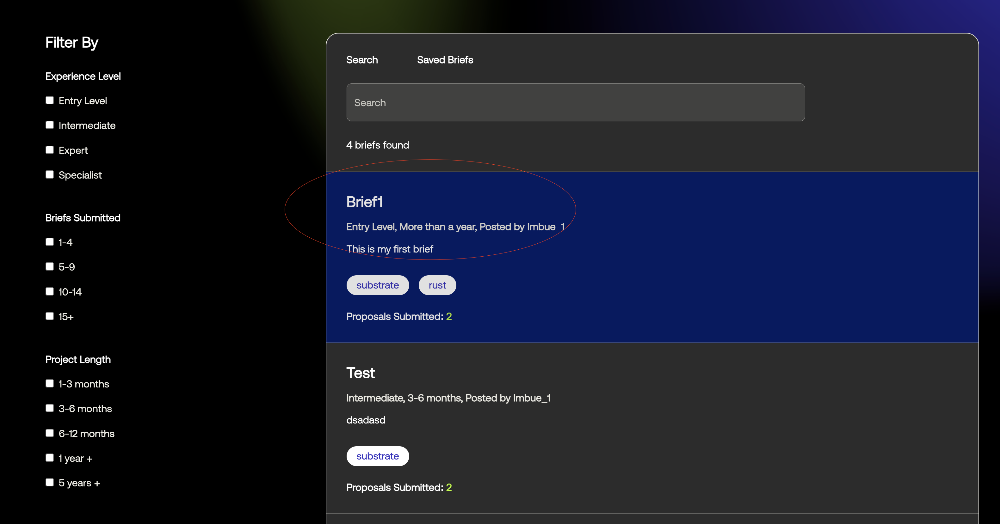

Brief Flow
Viewing the existing briefs
Upon successful login you will be redirected to the dashboard page, as shown in the image below.
- Step 1: From the dashboard view you either click into the freelancer view or go the menu and click the discover
briefs button, as shown below

 - Step 2: Once you click you can see the list of briefs as shown below

- Step 3: You can go through all the briefs can also filter through based in certain criteria and
click on the search button as shown below to apply the filters

Submitting/Posting a brief
- Step 1: From the dashboard view you either click into the client view or go the menu and click the post
briefs button, as shown below

- Step 2: Now you can click either
Post a Brieffrom the Client View orSubmit a Brieffrom the main menu. You will see the below screen
 - Step 3: Enter the headline and click next to enter the industry you project falls under as shown below

- Step 4: Enter the industry and click next to enter the description for your project
 - Step 5: Enter the description and click next to enter the skills required for your project
 - Step 6: Enter the skills and click next to enter experience level required

- Step 7: Enter the experience level and click next to enter the scope for your project

- Step 8: Enter the scope and click next to enter the estimate about how long your project will take

- Step 9: Enter the time estimate and click next to enter the budget for your project

- Step 10: Enter the budget and submit and you will be shown the thank you page
 - Step 11: You can now go to the discover briefs page and see your brief listed there as shown below
